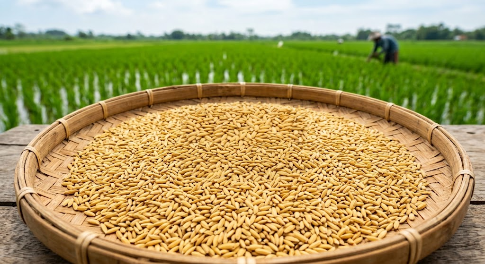

Memuat...
Kami tidak sekadar menjual benih. Setiap kantong benih Tani Bernas Mandiri melewati tahapan seleksi ketat dibantu agronomis berpengalaman guna memastikan daya kecambah sempurna.
Menggunakan benih penjenis murni langsung dari Balai Besar Penelitian Padi (BB Padi) Sukamandi.
Saringan udara mekanis memisahkan gabah hampa, kotoran, dan biji gulma hingga 99.8% murni.
Pengujian kadar air dan daya kecambah calon Benih di bawah audit resmi Balai Sertifikasi Benih.

Garansi Mutu Benih
"Apabila daya tumbuh benih tidak maksimal, kami siap mengganti benih baru secara gratis."
Kami berkomitmen penuh terhadap kepuasan Anda. Jika benih yang diterima tidak tumbuh maksimal, ikuti langkah-langkah berikut untuk mengajukan penggantian gratis.
Foto dan video kondisi benih saat direndam, disemai, serta kondisi lahan persemaian. Pastikan pencahayaan cukup dan gambar jelas.
Kirimkan dokumentasi beserta nomor pesanan dan nama varietas benih melalui WhatsApp resmi kami dalam waktu maksimal 14 hari setelah tanam.
Tim agronomis kami akan menganalisis dokumentasi dan memverifikasi apakah masalah berasal dari kualitas benih atau faktor eksternal (cuaca, tanah, dll).
Jika terverifikasi bahwa masalah berasal dari benih, kami akan segera mengirim benih pengganti baru secara gratis ke alamat Anda.
Butuh bantuan atau ingin mengajukan komplain? Tim kami siap melayani Anda.
Ajukan Komplain via WhatsApp